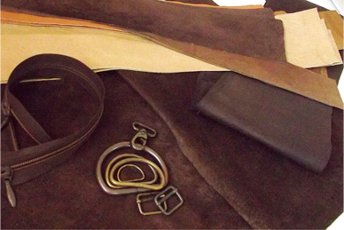
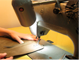

Для работы мы используем натуральную кожу разной выделки и фактуры. Для планшетов - жесткую, которая хорошо держит форму и позволяет делать швы с открытыми срезами. Для объемных сумок - плотную, но мягкую кожу глянцевой или зернистой фактуры.
Первичной является кожа! Она сама подсказывает стиль будущей сумки. мне остается только определиться с размером и декором.
Подкладки я люблю делать из хлопковой ткани, полосатой или в клетку. Иногда подбираю цвета в тон коже, иногда контрастные. Это , конечно, маленькое хулиганство, но я автор, могу себе позволить))) Что ещё? Нитки капроновые, фурнитура металлическая, цвета никель или антик. Для аппликаций использую тонкую цветную одёжную кожу разных фактур, для росписи акриловые краски.
Первичной является кожа! Она сама подсказывает стиль будущей сумки. мне остается только определиться с размером и декором.
Подкладки я люблю делать из хлопковой ткани, полосатой или в клетку. Иногда подбираю цвета в тон коже, иногда контрастные. Это , конечно, маленькое хулиганство, но я автор, могу себе позволить))) Что ещё? Нитки капроновые, фурнитура металлическая, цвета никель или антик. Для аппликаций использую тонкую цветную одёжную кожу разных фактур, для росписи акриловые краски.

